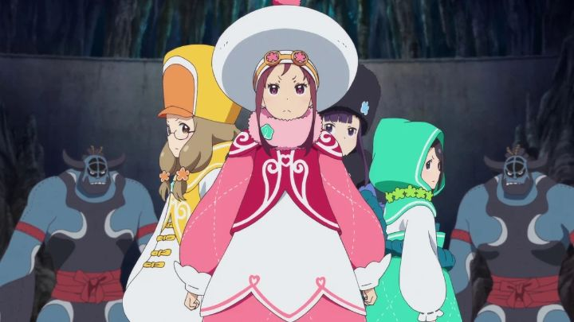

After years without a licensed distributor, I assumed I'd never get to see the 2016 original anime movie "Pop in Q," which had a bizzare but memorable title that made me think of "popping-and-locking-break-dancing." Imagine my surprise when an small Japan Film Festival in Ottawa (basically a cultural outreach event) was providing a free screening of it. Appropriately, they even had a Canadian J-Pop Idol group give a performance before the movie. This certainly helped set the mood to make the screening more memorable. Beyond this, I had gone into the movie blind, only knowing that Toei Animation was pushing the movie hard as an anniversary project upon its initial release. I wasn't expecting the story to be true to the title, and feature dancing idol girls who save the world. But that's basically what we get, in a fantasy story aimed squarely at pre-teen girls. In the opening, we're introduced to five such girls in modern Japan, each with their own pressures and struggles. One is moving away with her family, but left with unfinished goals with her track team. Another quietly focuses on studying and foregoes friendships or fun. Another is pressured by her parents to excel at Judo, but wants to wear pretty clothes, and just be, well, a girl. That's the general mindset for everyone: as they slowly move towards adulthood, they feel stressed and want to escape from it all. Suddenly, they're wisked off to a fantasy dream world, each of them with a cuddly-animal guardian, and are told they must save the land from the evil shadows with the magic of DANCE! They're given special outfits to survive in the world (surprisingly, these are large puffy mascot costumes at first, but transform into idol-style uniforms in the second half), and must train with each other to master the dance spell choreography. A challenging task, since they don't get along at first. There's nothing wrong with a story for young girls. In fact, there aren't enough of them. But a little overlap would be nice, and "Pop in Q" has virtually none for boys, or adults of either gender. I can't remember a story that was this blatant in their target audience. That said, if you're in the right mood for it (and the audience of adults I was with were prepped for it), the colourful and simple story is entertaining enough, with enough jokes and action to keep one's attention. There isn't exactly a shortage of "idol" stories in anime, but the fantasy-spin on it is somewhat novel, and the drama the characters face is much simpler and one-dimensional, helping keep it accessible to a young audience.  The colourful costumes and performances help elevate the movie a bit. The dance sequences are all 3D CGI and makes no effort to hide it, but in that domain, it's animated well enough. The songs are fun. The Japanese only voice acting (no English dub has yet been made) is cute. Basically, the production values across the board helps one forget the silliness of the story. While I'm not eager to ever watch "Pop in Q" again, and no longer lament a lack of an American release, I admit I had fun watching it, and would recommend it as a cute movie for young girls, an audience that hasn't been well served by other anime movies.
- "Ani" More reviews can be found at : https://2danicritic.github.io/ Previous review: review_Ponyo Next review: review_Pop_Team_Epic